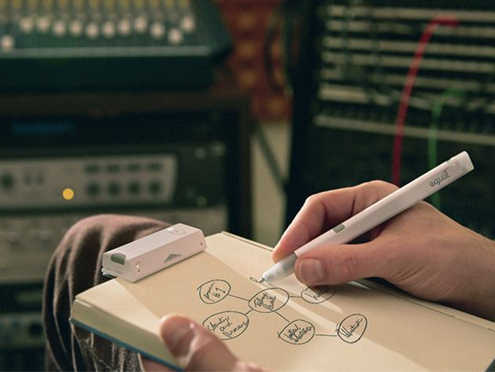

Top Gadgets To Boost Your Productivity
Recommended for office employees.

1. Doxie Go

Saving space and time in an office environment is important. Here's where Doxie Go SE, the portable scanner, comes in. Scan your paper documents, receipts or photos, and send them to your computer or cloud service in a split second. Doxie Go SE is compact, lightweight and doesn't take up more space than a rolled up magazine, so you can bring it with you anywhere. Its rechargeable battery will last you for up to 400 scans per charge. Don't have a computer with you? Not a problem for Doxie Go SE. No drivers are required. Just insert your document and scan. Doxie Go SE will save the scans on its expandable SD card or send them straight to your e-mail or favorite cloud app.
2. SanDisk Wireless Stick

The SanDisk Connect Wireless Stick is a reinvented flash drive that lets you wirelessly access and share your files on any of your devices - computer, phone or tablet. You don't have to plug it in, except to charge it or if you want to access your files the old-fashioned way. Share your files from a distance on multiple devices at the same time without the internet or wires. As long as the flash drive is within the vicinity, you can stream music and videos on up to 3 devices at the same time. Free up your phone or tablet memory - the SanDisk Wireless Stick is available in capacities from 16GB up to 256GB.
3. Luxafor Flag

The Luxafor does wonders for your productivity if you're in an open office environment. When you're sharing the same space with your coworkers, distractions can be a constant. Using Luxafor can help your coworkers know when you're busy and need to focus, and when you’re available to chat. Luxafor connects to your computer via USB cable, and you can use it to indicate to your team whether you're available or busy, by either shining the green light (available) or red light (busy). It helps keep interruptions at a minimum, as your coworkers will know when not to bother you. Plus, Luxafor can be synced with DeskTime to automatically shine red or green, depending on the program you're working on.
4. eBeam Smartmarker
TMake your meetings and pitch sessions more effective and interactive by sharing your whiteboard notes with the eBeam Smartmarker in real-time to anywhere in the world. Insert just about any regular dry erase marker in the Smartmarker sleeve, and whatever you write or draw will be captured and shared. No need to send a bunch of blurry photos after a conference or a brainstorming session, just share notes with your team or clients. With eBeam Smartmarker location cannot limit your communication, as you can use it on any writing surface.
5. Saent

Saent is a productivity tool that consists of a physical button and an app that blocks distracting online sites and apps. According to the creators of Saent: "If you have a physical or visual cue, that makes any behavior change much stronger if there's something in the environment to actually remind you." So, the button is what does the trick - hit it and your computer gets a virtual lockdown, where you don't have access to your most common distractions in previously timed sessions. The button also acts as a visual cue for your coworkers displaying when you are busy and should not be disturbed, and lets you know when you should take a break to recharge yourself. Saent also can generate reports on your productivity levels and work patterns to help you analyze your productivity.